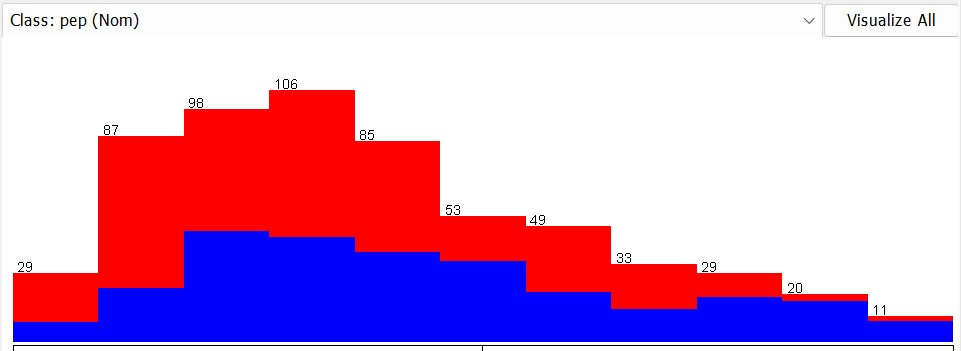

Bank Data
Attributes:

PEP class (Personal Equity Plan)
Pre-Processing Bank Data
- Load the files and save it in an ARFF format
- Carry out a visual analysis of the dataset
- Drop the ID attribute
Which attribute is more relevant for our analysis?
- Sex (no relevant difference)
- Age (not as relevant as income, but there is a trend)
- Married (relevant)
-
Children (linear correlation, the first column does not respect the trend)
-
Income (normal distribution)
- The higher the income, the higher the probability to buy PEP

Visualize the Plot Matrix

The higher the number of children, the lower the income as children cost a lot of money.
People without children are not interested in PEP as they do not need to think about the future.
Classify
Use the following algorithms and evaluate the result:
- J48
- J48 (without post-pruning)
- Jrip
- IBk (with k=1 and k=5)

The main variables are children and income (closest to the root).
KNN with k = 1 using the training set has an accuracy of 100% because the closest point to me is me (if given), so we drop it.
With IBk we are using a distance function so numbers should be discretized.
Also, irrelevant and replicated attributes can create distortion in the result. - In this case, irrelevant attributes are most likely (sex, car)

We can drop the irrelevant attributes to increase accuracy.
Created: October 18, 2022 09:37:00